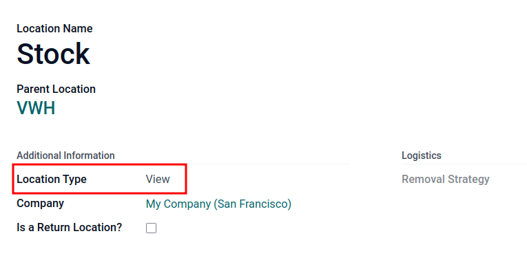
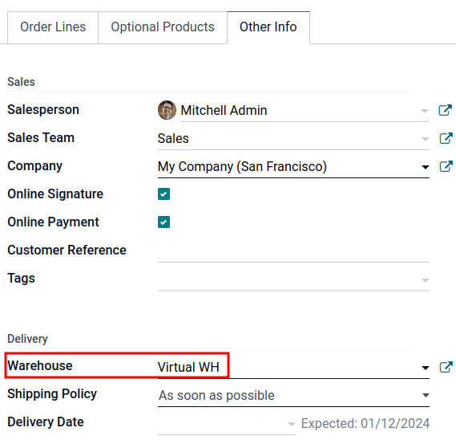

Sell stock from multiple warehouses using virtual locations¶
While keeping stock and selling inventory from one warehouse might work for smaller companies, bigger companies might need to keep stock in, or sell from, multiple warehouses in multiple locations.
Sometimes products included in a single sales order might take stock from two (or more) warehouses; in Odoo, pulling products from multiple warehouses to satisfy sales demands can be done using virtual locations.
Important
The solution in this document, describing the use of a virtual warehouse to fulfill orders for multiple warehouses, has some limitations. Consider the following before proceeding:
When the Warehouse field is set to a virtual warehouse on a sales order, the virtual warehouse’s address is indicated on the picking, packing, and delivery forms, not the actual warehouse’s address.
Each location has a
warehouse_id(hidden field). This means that the stock in the virtual warehouse will not be the sum of the stock of the real warehouses, but rather the sum of the stock in the locations whose warehouse ID is the virtual warehouse.
Danger
Potential limitation for those using two or three-step delivery:
The output or packing zone on the various forms is incorrectly listed as the virtual warehouse’s address.
There is no workaround for two or three-step deliveries.
Proceed only if setting a virtual warehouse’s address as the output or packing zone makes sense for the company’s workflow.
Note
In order to create virtual locations in warehouses, and proceed to the following steps, the Storage Locations and Multi-Step Routes features must be enabled.
To do so, go to , scroll down to the Warehouse section, and enable the Storage Locations and Multi-Step Routes options. Then, Save the changes to finish.
Create virtual parent location¶
Before creating any virtual stock locations, create a new warehouse that acts as a virtual warehouse — the parent location of other physical warehouses.
Virtual warehouses are great for companies with multiple physical warehouses. This is because a situation might arise when one warehouse runs out of stock of a particular product, but another warehouse still has stock on-hand. In this case, stock from these two (or more) warehouses could be used to fulfill a single sales order.
The “virtual” warehouse acts as a single aggregator of all the inventory stored in a company’s physical warehouses, and is used (for traceability purposes) to create a hierarchy of locations in Odoo.
To create a new warehouse, go to , and click Create. From here, the warehouse Name and Short Name can be changed, and other warehouse details can be changed under the Warehouse Configuration tab.
Lastly, click Save to finish creating a regular warehouse. Continue following the steps below to finish configuring the virtual parent warehouse.
Create child warehouses¶
Create at least two child warehouses to link to the virtual warehouse.
Important
In order to take stock from multiple warehouses to fulfill a sales order, there needs to be at least two warehouses acting as child locations of the virtual parent location warehouse.
To do that, navigate to , click Create, and follow the preceding instructions to configure the physical stock locations.
Example
Virtual WarehouseVWH/StockWarehouse A and Warehouse BWHA and WHB
Important
While the virtual stock location will be changed to ‘View’ later, the Location Type must be Internal Location at this point to link the child warehouses in the next section.
Link child warehouses to virtual stock¶
To set physical warehouses as child locations of the virtual location configured in the previous step, navigate to .
Remove any filters from the search bar. Then, click the physical warehouse Location that
was previously created to be a child location (e.g. WHA), and click Edit.
Change the Parent Location field from Physical Locations to the virtual
warehouse’s stock location (e.g. VWH/Stock) from the drop-down menu, and click
Save.
Important
To select the virtual warehouse’s stock location in the Parent Location drop-down
menu, the parent warehouse stock location (e.g. VWH/Stock) must have its
Location Type set to Internal Location.

Repeat the preceding steps to configure two or more child warehouses.
Once complete, the virtual, parent warehouse (e.g. VWH/Stock) fulfills orders using stock from
child warehouses (e.g. WHA and WHB), if there is insufficient stock in any one location.
Set virtual stock location as ‘view’¶
Set the virtual stock location’s Location Type to View, as it is a non-existent location used to group various physical warehouses together.
To do that, navigate to .
Click the virtual warehouse’s stock location (e.g. VWH/Stock) that was previously created, from the Locations list.
On the location form, under the Additional Information heading, set the Location Type to View. Save the changes.
Tip
To view the total quantity across all linked child warehouses, go to the product form and click the On Hand smart button.

Example: sell products from a virtual warehouse¶
To sell products from multiple warehouses using a virtual parent location, the database must have at least two warehouses configured — with at least one product, with quantity on-hand in each warehouse, respectively.
Example
The following product, Toy soldier, is available at each location with the quantities:
WHA/Stock: 1WHB/Stock: 2Warehouses
WHAandWHBare child warehouses of the virtual warehouseVWH.
Create a quotation for the product by navigating to the app and clicking Create. On the quote, add a Customer, and click Add a product to add the two products stored in the two warehouses.
Then, click the Other Info tab on the sales order form. Under the Delivery section, change the Warehouse field value to the virtual warehouse that was previously created. Next, Confirm the sales order.
Then, click the Delivery smart button. From the warehouse delivery form, confirm that the Source Location value matches the Warehouse field value from the sales order. Both should list the virtual warehouse location.
Finally, on the warehouse delivery form, under the Detailed Operations tab, confirm that the Locations in the From column for each product match the child locations that are tied to the virtual parent location.

Important
The Source Location on the warehouse delivery form, and the Warehouse under the Other Info tab on the sales order, must match for products in the sales order to be pulled from different warehouses.
If the virtual warehouse is not in the Source Location field on the warehouse delivery form, retry product reservation by:
Running the scheduler: turn on developer mode, and then go to .
Clicking Check Availability on the delivery order.
If the virtual warehouse is not assigned to the Warehouse field on the sales order, then cancel it, and create a new sales order with the virtual warehouse set in the Warehouse field.
If the Warehouse field is missing on the sales order form, then the multiple child warehouses may not have been set up correctly. Review the previous section to ensure the correct settings.
Tip
To use a virtual parent location as the default warehouse for sales orders, each salesperson should have the virtual warehouse assigned to them from the drop-down menu next to Default Warehouse on their employee form.